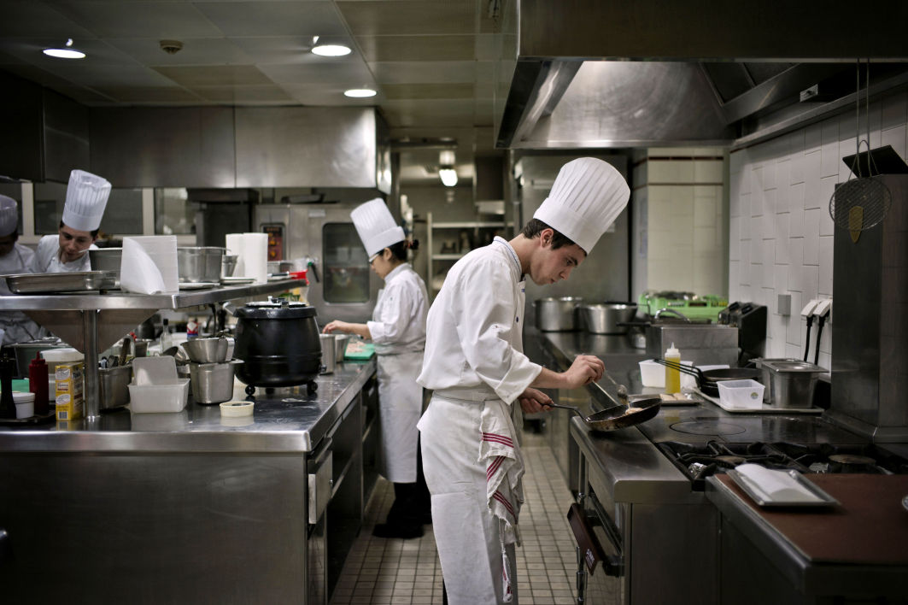
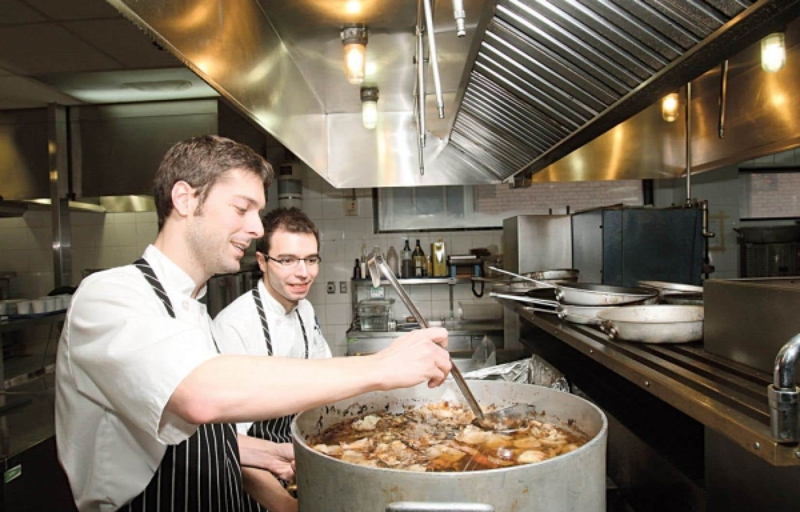
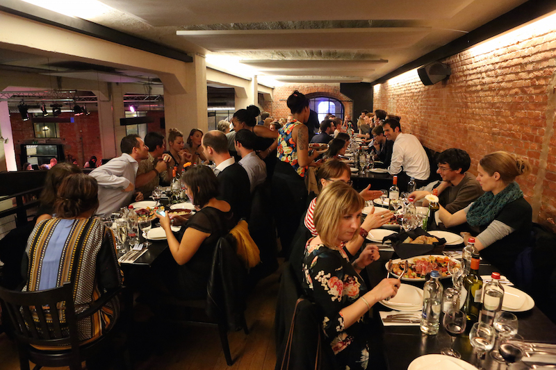

Le Bistrot
Bienvenue dans notre univers ! Oscillant entre des classiques revisités, des plats mijotés, des assiettes généreuses et créatives, au plus près des meilleurs produits arrivés chaque jour, au fil des saisons, en plein cœur du septième arrondissement. La belle carte des vins de vignerons, avec ses 90 références, du vin nature au grand cru, avec un large choix de vins servies au verre, font la joie des amateurs.



Réservation
Infos pratiques
Invalides - Ecole Militaire, Saint-Germain-Des-Prés, Île-De-France - 122, rue de Grenelle
75007 Paris
ITINÉRAIRE
Métro
Solférino (ligne 12), Varenne (ligne 13) RER ligne C (musée d'Orsay)
Bus
Grenelle (ligne 69), Invalide (83,87,93)
Parking
Parking Indigo Paris Bac Montalembert à 700m / Parking couvert 9, rue Montalembert 75007 Paris